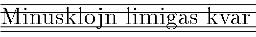

i
simbolas tiun kompleksan nombron, ke i²=−1.
i
simbolas tiun kompleksan nombron, ke i²=−1.
Internacia normo de ISO kaj CCITT, difinanta signaron. Oni ofte asertas ke IA5 kaj Askio estas sinonimoj; fakte IA5 estas la kodata aro por Askio, sed oni povas uzi ankaŭ aliajn kodojn por prezenti la signaron IA5, ekz-e EBCDIC.
2000-07-13
Internacia firmao, la plej granda komputilfabrikanto en la mondo. Sian nunan nomon ĝi ricevis en 1924.
1996-10-14
La firmao IBM estas notora pri la uzado de nenormaj kodoj; ekz-e,
Angle: IBM code
1996-02-29
Familio de personaj komputiloj de la firmao IBM surbaze de la procesoroj Intel-8088 (IBM PC XT), Intel-80286 (IBM PC AT), Intel-80386 kaj Intel-80486. Vd IBM-a kodo, EGA, VGA.
1996-02-29
Aranĝaĵo ebliganta facilan ŝanĝadon de icoj sur presita cirkvitkarto. Icingo estas allutita al la karto; ico estas fiksata en ingon havantan kontaktotruetojn (laŭ la nombro de la bornoj de la ico).
Angle: chip socket
1996-02-29
«☇  Akronimo por integrita cirkvito. Aro da interkonektitaj aktivaj kaj
pasivaj komponantoj demetitaj sur unu solan duonkonduktantan substraton per
kontinua serio de akordigeblaj procedoj» [SPIV].
Akronimo por integrita cirkvito. Aro da interkonektitaj aktivaj kaj
pasivaj komponantoj demetitaj sur unu solan duonkonduktantan substraton per
kontinua serio de akordigeblaj procedoj» [SPIV].
Kp blato, integra cirkvito.
Angle: IC
1996-02-29
Nova versio de ĉefdosiero. Vd ĝisdatigo de dosiero, patra dosiero.
Angle: son file
France: fichier mis à jour
Germane: Sohndatei
1996-02-29
Ω Procezo rilate al alia procezo ĝin lanĉinta (al la patra procezo).
Angle: child
process
Ruse: процесс-потомок, дочерний
процесс
2000-08-20
Angle: idempotent
Ruse: идемпотент
1996-02-29
Fakvorto por nomo en la programlingvoj.
Noto. Pro sia internacieco en la faka mondo la vorto «identigilo» probable estas neevitebla, kvankam ĝi havas evidentajn malavantaĝojn: ĝi estas longa (tial en sintaksaj priskriboj oni ofte ĝin mallongigas ĝis «id»); ĝi maltrafe esprimas sian signifon (en la tradukiloj ĉiam estas proceduroj por «identigi», rekoni la diversajn aperojn de unu sama nomo aŭ signoĉeno aŭ literalo; ĝuste tian procedurmodulon oni devus nomi «identigilo» — angle identification module). Ĉiel ajn, por «lernejnivela» Leksikono preferindas uzi pli bonstilan kaj tute sufiĉan komunan vorton «nomo», kiel ekz-e en la germana Schülerduden «Die Informatik» (Mannheim: Bibliographisches Institut, 1986).
Angle: identifier
Germane: Bezeichner, Identifikator, Name
Ruse:
идентификатор
1996-02-29
En radikhava arbo, ajna vertico krom la radiko. Vd patro.
Angle: child
France: nœud enfant
Ruse: дочерняя
вершина
1996-02-29
Tia funkcio
f: A→B, ke ĝia domajno estas subaro de la fonta
aro: dom f⊆A; kp ĉiea funkcio.
Rim. Do, ĉiu ajn funkcio estas iea (la ĉieaj estas malpropra speciala okazo).
Angle: partial function
Ruse:
частичная функция
1996-02-29
La plej granda faka asocio en la mondo, fondita en 1884, rezidanta en Usono kaj havanta entute pli ol 320 000 membrojn en diversaj landoj.
IEEE aranĝas fakajn konferencojn tutmonde, publikigas preskaŭ kvaronon da artikoloj pri elektroteĥniko, elektroniko kaj komputoscienco, kaj multe kontribuas al normigo.
La hejmpaĝo: http://www.ieee.org/.
Noto. Prononcu «i-tri-e».
1998-06-26
Internacia Federaĵo por Inform-Prilaboro, aŭtoritata internacia scienca asocio, aranĝanta tutmondajn komputikajn kongresojn kaj patronanta internaciajn komputikajn projektojn (inter ili, ekz-e, ALGOL).
1996-02-29
 En la forumaro, retano trafinta en ignordosieron.
En la forumaro, retano trafinta en ignordosieron.
Angle: plonk(er)
1999-02-01
En retumado, dosiero per
kiu retano informas sian retumilon, (poŝtilon, novaĵlegilon) kiajn sendaĵojn ĝi malatentu.
La dosiero entenas regulesprimojn
ebligantajn rekoni seninteresajn aŭ alie nedezirindajn aŭtorojn, temojn aŭ
aliajn ecojn de la mesaĝa ĉapo (vd ekzemplon
ĉe disafiŝado).
Angle: kill file
1998-03-14
Maniero de askiigo de ĉapelhavaj literoj de Esperanto per kombinaĵo de la subĉapela litero kaj la ne-Esperanta litero x; ekz-e
En Emakso disponeblas enigmetodo por la litetroj de esperanto, bazita sur iksismo (esperanto-alt-postfix): por enigi «ĉirkaŭ» oni klavu «cxirkaux»; por enigi «auxiliary» oni malŝaltu tiun enigmetodon aŭ duobligu ikson.
Pri la skribo vx vd sub ŭ.
2001-09-23
 En
Anglalingvujo x estas relativa presarta mezurunuo, kiu por koncerna
tiparo indikas la alton de «normala» etlitero (tipa ekzemplo de tia etlitero estas
ikso). Alivorte, ikso estas la distanco inter la du internaj horizontallimoj
de la koncerna minuskla signaro.
En
Anglalingvujo x estas relativa presarta mezurunuo, kiu por koncerna
tiparo indikas la alton de «normala» etlitero (tipa ekzemplo de tia etlitero estas
ikso). Alivorte, ikso estas la distanco inter la du internaj horizontallimoj
de la koncerna minuskla signaro. 
Ekz-e en la tipara familio Computer Modern, uzata en TeX, 1 ikso egalas 4.3 pt (1.51 mm) por la 10-punktaj klasika fasono kaj tajpesko, dum por la 10-punkta graseto 1 ikso estas preskaŭ 4.44 pt, proks. 1.56 mm.
Angle: ex, x-height
1996-02-29
Sufikso kies komputikaj signifoj povas implici diversajn rimedojn: programan kajaŭ aparatan (ciferecigilo, formatilo, grafikilo, interpretilo, kodilo, malkodilo, komputilo, nombrilo, servilo, simulilo), kvankam ĉe la nuna stato de la fako iuj el ili kutime havas nur unu el tiuj formoj —
Noto. Uzante unu saman sufikson por diversspecaj rimedoj oni riskas ricevi amasiĝon de samfinaj vortoj; sed tio estas tre akceptinda prezo de sistemeco. Cetere, ankaŭ la anglaj assemblER, computER, compilER ktp ne estas tre variaj.
1996-04-06
 Kutima komponanto de GUI, permanente videbla grupo da piktogramoj en ekrana fenestro, servantaj por musklake aktivigi agon aŭ
reĝimon.
Kutima komponanto de GUI, permanente videbla grupo da piktogramoj en ekrana fenestro, servantaj por musklake aktivigi agon aŭ
reĝimon.
Ekz-e en dialoga programo por desegnado la koncernaj iloj povus esti peniko, viŝilo, tondilo ktp. En multaj GUI-oj ilobreto estas pli trafa priskribo.
Angle: tool pane
Ruse: панель
инструментов
2000-04-13
Kolekto de programoj liverata kun sistema programaro (ekz-e operaciumo) por la programistoj kiuj realigos aplikajn sistemojn, funkciontajn kunlabore kun la koncerna sistema programaro. La kolekto inkludas rimedojn por atingi la sistemon el diversaj programlingvoj, programskemojn kaj ĝustigilojn.
Angle: toolkit, toolbox
France: boîte à outils
Ruse:
инструментарий, пакет разработчика
1996-02-29
Komputilo uzata por krei programaron por alispeca komputilo (celkomputilo).
Angle: host computer,
source computer
Ruse: инструментальная ВМ
1996-02-29
Speco de ilfako,
permanente videbla horizontala vico da piktogramoj ĉe rando de ekrana fenestro, servantaj por musklake aktivigi agon aŭ
reĝimon.
Ekz-e en dialoga programo por desegnado la koncernaj iloj povus esti peniko, viŝilo, tondilo ktp.
Angle: tool bar
Ruse: панель
инструментов
2000-04-13
Program(ar)o prizorganta bazajn funkciojn de komputilo kaj uzata de aplika programo (ekz-e operaciumo, tradukilo).
Angle: system software,
tool program
Ruse: системная программа,
инструментальное программное средство
1996-02-29
Programa rimedo uzata por konstrui programaron; porteblo de programaro dependas je la porteblo de la ilrimedoj per kiuj ĝi estas realigita.
Angle: tool
France: outil, aide
Ruse:
вспомогательная программа
1996-02-29
Reĝimo de komputilo aŭ aparato en kiu ĝi plenumas komandojn de similspeca aranĝaĵo kun alia komandaro. Ekz-e la uzo de nova komputilo por ruli la programojn, verkitajn por malnova, ne kongrua, komputilo; imitado de la printaĵo sur la ekrano de terminalo dum superflugo. Kp simulado.
Angle: emulation
Ruse: эмуляция, имитация
1996-02-29
Rimedo, plej ofte programo aŭ mikroprogramo, por fari imitadon.
Angle: emulator
Ruse:
эмулятор, имитатор
1996-02-29
Tia, ke ĝi difinas ion nur nerekte, per iu(j) eco(j). Ekz-e pri difino de funkcio per ekvacio. Kp defaŭlto, implikacio.
Angle: implicit
Ruse:
неявный
1999-05-25
Speco de fikspunkta prezento de reeloj en komputilo. La aparataro kutime traktas tiajn nombrojn kiel entjerojn (do, relative pli rapide ol la nombrojn glitpunktajn), kaj pri la pozicio de la on-punkto zorgas la programaro, realiganta la koncernan programlingvon.
Angle: assumed radix point, assumed
decimal point
France: virgule implicite
Germane: Rechendezimalpunkt
Ruse:
подразумеваемая запятая
1996-02-29
Bulea operacio (simbole: ⇒); a⇒b (voĉlegu: «a sekvigas boon», aŭ «el a sekvas bo») ekvivalentas al (¬a)∨b; en Paskalo ĝi esprimeblas per a≤b.
Ambaŭdirekta aŭ reciproka implikacio estas ekvivalenteco, SSE.
Rim. Verdire, implikacio ne estas tre grava operacio por komputoscienco, kvankam ĝin tre atentis la skolastika logiko. Laŭ ties tradicio oni povus nomi la du operandojn de implikacio antecedento (a; PIV1 registras nur juran sencon por tiu vorto) kaj konsekvenco (b). Kp premiso, konkludo.
Noto. [Rei87] kaj la PIV-oj proponas por tiu signifo la vorton «implico». Kvankam tiu vorto sonas pli bele, ĝia natura, «logika» senco devas esti iom alia (vd implica); ekz-e implica funkcio normale signifas «funkcio difinita per ekvaci(ar)o»; sed kun la PIV-a «implico» ĝi interpreteblas kiel «implikacia funkcio». Fakte, tia uzo kontraŭas kaj la matematikan uzon (implica funcio, difino), kaj la komunlingvan: la implikacio a⇒b ja tute malimplice indikas, ke el a sekvas b; kaj komunlingve «implico» povas indiki subkomprenatan premison aŭ eble konsekvencon — sed ne kondiĉan frazon.
La inetrnacia termino «implikacio», en Esperanto neanalizebla, ebligas eviti tiujn problemojn kaj klare distingi inter «implikacia formulo» — «implica formulo», «forigi, malvolvi implikaciojn» — «forigi, malvolvi implicojn» ktp.
Angle: implication
France: implication
Germane: Implikation
Ruse: импликация
1996-02-29
En grafeo, vertico
v kaj eĝo e estas incidaj se
v estas ekstremo de e; aŭ formale (en la simbolaro de El grafeiko):
(∃w∈V)[P(v,e,w)∨P(w,e,v)]
Noto. Laŭ PIV1,
incid·i (ntr:) ☢ (pri lumradio ktp) Trafi surfacon, ne penetrante ĝin …incid·a. Rilata al la incido: incida punkto; incida angulo.
Angle: incident
Ruse: инцидентный
1996-02-29
Vd sub grafeo. Kp najbarmatrico.
Angle: incidence matrix
France: matrice d'incidence
Germane: Inzidenzmatrix
Ruse: матрица
инцидентности
1996-02-29
Atingomaniero en kiu la adreso de bezonata rikordo estas serĉata per unu aŭ pluraj indeksoj, eventuale hierarkiaj (kp B-arbo; indeksvica atingo).
Angle: indexed access method
Ruse:
индексный метод доступа
1996-02-29
Dosiero aŭ datumaro en kiu la rikordoj estas atingataj per indekso. Se unu sama ŝlosilo estas uzata por ordigi la dosieron kaj por konstrui la indekson, la indekso estas nomata ĉefindekso kaj la dosiero, indeksvica dosiero; alie temas pri kromindekso kaj inversigita dosiero.
Angle:
indexed file
France: fichier indexé
Ruse:
индексированный файл
1996-02-29
En Unikso, datumstrukturo uzata por dosieradministrado kaj entenanta la atributojn de dosiero: la informojn pri ties reĝimo, tipo, posedanto, atingopermesoj kaj la adresojn de la datumaro.
Angle: inode
Ruse:
индексный дескриптор файла
1999-04-06
Noto. Vd ĉe krucreferencaro, indico.
Angle: index; cross-reference table
Ruse: индекс; таблица перекрёстных
ссылок
1996-02-29
Atingomaniero kombinanta avantaĝojn de indeksa atingo (do, sufiĉe rapida) kun tiuj de laŭvica atingo (do, relative memorŝpara). Maldetale, granda datumaro linie ordigita laŭ iu ŝlosilo estas dividata en pli malgrandajn areojn. Ene de la areoj eblas nur laŭvica atingo. Ĉiun areon karakterizas la plej granda valoro de la serĉoŝlosilo, aperanta en la areo. La limaj valoroj de la areaj serĉoŝlosiloj formas indekson, kiu mem estas registrata en la datumaro. Ankaŭ la indeksojn oni povas dividi en similajn areojn, kio rezultigas hierarkian adresaron kun sufiĉe rapida atingo; kaj ofte, nur la plej supra adresaro, la superindekso, rezidas en la ĉefmemoro.
Angle: index-sequential
access method, ISAM
Ruse:
индексно-последовательный метод доступа
1996-02-29
Krommarĝeno aŭ deŝovo.
1996-09-01
Speco de relativa adresado, kiam la fakta adreso estas sumo de la enhavo de reĝistro kaj de bazo indikita per adresparto de komando.
Ekz-e por adresi j-an elementon de tabelo, kies nula elemento havas la adreson 100, oni ŝargu j-on en reĝistron (kies numeron oni indiku en la reĝistra parto de la komando), kaj la bazon 100 oni metu en la adresparton de la komando; reĝistron tiel uzatan oni ofte nomas indicreĝistro.
Angle: indexed
addressing
Ruse: индексная адресация
1998-11-02
Esprimo indikanta elementon de tabelo; ĝi konsistas el indiko de tabelvariablo, sekvata de indica opo en (rektaj) krampoj. En Paskalo:
indichava_variablo = variablo "[" esprimo {"," esprimo} "]". Ekz-e
V[i+1] M[k,f(j)] ref↑.tabKampo[5]['A']
Angle: indexed variable
Ruse: переменная с индексами
1996-02-29
Esprimo indikanta la numeron de elemento de tabelo en la koncerna dimensio: linion (horizontalon), kolumnon (vertikalon), paĝon ktp. Vd ankaŭ suba indico, supra indico.
Angle: index, subscript
France: indice
Ruse: индекс
1996-08-23
Reĝistro uzata en indichava adresado. Kutime oni povas legi («ŝargi») en indicreĝistron valoron el alia reĝistro aŭ el memorĉelo, oni povas skribi la valoron de indicreĝistro («malŝargi») en la ĉefmemoron, oni povas krementi la valoron de indicreĝistro, ĝin testi per diversaj komparaĵoj kontraŭ nulo kaj programi kondiĉajn saltojn depende je la komparrezulto.
Angle: index register
Ruse:
индекс-регистр
1996-02-29
En Paskalo, simpla tipo (fakte, numerebla tipo aŭ tipnomo de numerebla tipo) uzata en deklaro de tabeltipo por specifi la tipon de indicoj en dimensio de tabeloj.
Angle: index type
Ruse: тип индекса
1996-02-29
Programlingvo por indiĝena reĝimo. Striktasence tiu estus la komandaro de la koncerna procesoro, sed praktike temas pri programlingvo speciale apogita en koncerna operaciumo.
Noto. Kp gastiga lingvo.
Angle: native
language, host language
Germane: Muttersprache, eigene Sprache
Ruse:
базовый язык, родной язык
1998-10-08
Prezentmaniero, formo de datumoj propra al koncerna komputa sistemo.
Angle: native format
Ruse: собственное
представление данных
1998-10-08
Funkciado de komputilo en ĝia propra komandaro, kontraste al imitado.
Angle: native mode
France: mode naturel
Germane: Muttermodus, eigener Modus
Ruse:
собственный режим
1998-10-08
Ĉefa tradukilo por koncerna programlingvo en koncerna komputa sistemo, kiu produktas celkodon por tiu sama komputilo sur kiu ĝi estas rulata (kontraste al gasttradukilo).
Angle: native compiler
Germane: Mutter(modus)compiler, eigener Compiler
Ruse:
родной транслятор
1998-10-08
En priskriboj de programlingvoj, sinonimo de prezento; ekz-e funkciindiko (angle function designation), entjeroindiko (angle integer denotation).
Noto. Vd semiotiko; kp montrilo.
Angle: designation,
denotation
Ruse: изображение
1996-02-29
Noto. «Indukto» sendube estas pli internacia, la franceca rikuro probable estas pli logika.
Angle: induction
France: récurrence
Ruse: математическая
индукция
1996-02-29
« Ĉiu pensago, per kiu oni iras de unu
propozicio, rigardata kiel vera, al alia propozicio» [PIV1].
Ĉiu pensago, per kiu oni iras de unu
propozicio, rigardata kiel vera, al alia propozicio» [PIV1].
Angle: inference
France: inférence
Germane: Inferenz, Schlußfolgerung
Ruse: вывод
1996-02-29
 inform·ad·ik·o [PIV1] —
inform·ad·ik·o [PIV1] —
Noto. Laŭ PIV1,
Scienco pri la racia traktado, precipe per aŭtomataj maŝinoj, de la informado rigardata kiel liverilo de la scioj kaj komunikaĵoj en teĥnika, ekonomika aŭ socia kampo.
Noto. Per tiu malklara difino oni evidente volis kombini la proprasencan informatikon, komputosciencon kaj informon; sed la rezulto malakordas kun la laŭelementa senco de la vorto, kiu gramatike devus signifi «informada fako», do ion similan al «ĵurnalistiko» (ĉar informado estas «ago informi»).
La terminoj informatiko aŭ informadiko «estas neinformaj, ĉar en preskaŭ ĉiuj sciencoj oni prilaboras informojn» [Rei87].
Malkiel PIV1, ni preferas la formon informatiko, kiu estas tre internacia kaj ne perfortas la lingvan logikon.
Angle: computer science; informatics
France: informatique
Germane: Informatik
Ruse: информатика
1997-01-02
Noto. Informatiko (1) ŝajnas pli internacia ol komputoscienco, ĉar uzata en la lingvoj franca, germana, rusa; tamen la angla sufiĉas por kontraŭpezi ilin ĉiujn, tiom pli ke la terminoj informatiko aŭ informadiko «estas neinformaj, ĉar en preskaŭ ĉiuj sciencoj oni prilaboras informojn» [Rei87]. Fakte, en komputoscienco temas ne pri mistera «informo» sed pri la palpebla datumo. La kritikon de false radikŝpara «informadiko» vd ĉe la koncerna artikolo.
Kp informteorio.
Angle: information science; informatics
France: informatique
Germane: Informatik
Ruse: информатика
1997-01-02
Komando servanta por akiri informon el komputa sistemo (el operaciumo, el datumbanko, ofte en dialogo). Vd datummanipula lingvo, ekstrakti.
Angle: enquiry, inquiry, query
Germane: Anfrage, Abfrage
France: interrogation
Pole: kwerenda
Ruse: запрос
1996-02-29
La signifo de datumo, «propredirita enhavo de la komunikitaĵoj» [PIV1].
Angle: information
Ruse: информация
1996-02-29
Nocio de informteorio. Dum eksperimento estu eblaj n
rezultoj kun la probabloj pk, k=1,…,n. La informokiomo
en la rezulto k estas la reelo −log₂ pk. Vd
ŝanono.
Rim. Laŭ tiu koncepto la informokiomo de signalo estas des pli granda, ju malpli probabla estas ĝia apero; do, mesaĝo malprobabla, sensacia estas rigardata kiel havanta grandan informokiomon. La angla termino kaj ĝiaj tradukpruntoj alilingvaj estas misgvidaj: neniel temas pri enhavo de la mesaĝo; sed ebla apliko estas elekto de statistike plej rendimenta varilonga kodo, en kiu la plej oftaj signoj ricevu kodonojn mallongajn, dum por la signoj mapli oftaj eblas uzi kodonojn pli longajn; do, en tia apliko al pli granda informokiomo respondus pli longa prezento.
Angle: information content
France: contenu en informations
Germane: Informationsgehalt
Ruse: количество
информации
2005-11-05
La tutmonde estiĝanta rapidega komunikreto, kapabla transmeti datumojn en la plej diversaj formoj (en la prezentoj interne komputila, ekstere vida, aŭda ktp). La disponigataj servoj uzas komunikojn sputnikan, lumfibran, telefondratan — kaj taŭge ekipitajn komputilojn.
La metaforo estas ŝuldata al la eksa Usona vicprezidento Al Gore [æl ɡɔ:] (komenco de la 1990aj jaroj).
Angle: information superhighway,
information highway, Infobahn, Info Strada
France: inforoute
Hispane: infopista, autopista de información, autopista de datos
Pole: infostrada
1996-02-29
Signo, kiu estas parto de la enhavo de mesaĝo, kontraste al stirsigno.
Angle: information character
France: caractère d'information
Germane: Informationszeichen
Ruse:
информационная литера, текстовая литера
1996-02-29
Matematika teorio studanta kvantajn aspektojn de datumtranssendo (informokiomon).
Noto. Kp informatiko.
Angle: information theory
France: théorie d'information
Germane: Informationstheorie
Ruse: теория
информации
1996-02-29
«I. Suf. signanta objekton, en kiu unu alia objekto aŭ membro estas parte enigita kaj fiksita, ordinare per sia ekstremaĵo» [PIV1].
Ekz-e icingo, kartingo; surmetingo. Cetere ni opinias, ke por la faka uzo plej gravas la ideoj pri unuopeco kaj fiksado en funkcipreta pozicio, kaj malpli, pri la parta enigo. Tiel diskingo (angle disk drive) estas pli klara ol diskujo (kp «monujo»). Simile, ciferingo estus pli mallonga ol «ciferpozicio» (kp signejo). Vd ankaŭ ingado.
1996-02-29
Por apero de programa frazo, la nombro de samspecaj frazoj kies parto ĝi estas (vd rekursia ingado); alivorte, en la radikhava arbo prezentanta la ingadon, la distanco de la koncerna vertico ĝis la radiko.
Angle: nesting level
France: niveau d'emboîtement
Germane: Verschachtelungsebene, Verschachtelungsniveau
Ruse: уровень вложенности, глубина
вложенности
1996-02-29
Vd rekursia ingado, ingita iteracio, ingita proceduro.
Noto. Iuj
uzas la anglaĵon nestado [MMES]; tion ni
opinias evitinda, ĉar la koncerna signifo de la angla nest — «aro
da objektoj havantaj laŭgrade malpliiĝantan dimension, tiel ke ili estas
eningigeblaj unuj en aliajn» — estas neniel internacia kaj fremda al
Esperanto. Pli grave, ĝi sekvigas la misgramatikan nestita
(nesti estas verbo netransitiva, kaj la ideon de «nesthava» plie
esprimus la participo aktiva: nestanta — kp «birdo tie nestanta»);
dum ingi (= eningigi) havas la paradigmon de kadri [Z]
(= enkadrigi [Z]), kaj ingita (kp kadrita [Z]) estas
regula.
Angle: nesting
France: emboîtement
Germane: Schachtelung
Ruse: вложенность
1996-02-29
Iteracio aperanta en la korpo de alia iteracio (ekz-e kiel en la programo kopiuTekston).
Angle: nested loop
1996-02-29
Proceduro aŭ funkcio kies deklaro aperas en la deklaro de alia proceduro aŭ funkcio. Iuj programlingvoj (ekz-e C) malpermesas proceduroingadon.
(Paskalaj ekzemploj pri ingita proceduro estas en Paskala programo pri la 8 damoj) kaj Ekzemplo pri rekursia desupriĝo)
Angle: nested procedure
Ruse:
вложенная процедура
1996-02-29
«omenca litero de vorto — miniature pentritaj inicialoj» [PIV1]; ĉeflitero de la unua vorto de libro, ties ĉapitro aŭ alia parto, dimensie pli granda kaj ofte presita en alia koloro kompare kun la ceteraj ĉefliteroj, emfazanta komenciĝon de la teksto. Krom la literon mem, inicialo povas enteni ilustraĵon aŭ ornamon.
Noto. La konfuzo kun la komencliteroj de personnomoj estas same internacia kiel sendanĝera. Oni povus provi ĉefliteregon — kp la terminojn rusan kaj francan — sed tio ne estas internacia kaj ŝajnas iom pedanta.
Angle:
initial, drop capital
France: lettrine
Germane: Initial(e)
Itale: iniziale
Ruse: буквица
1996-02-29
Neperkuta printilo funkcianta per elektrostatike direktata ŝprucigo de gutetoj da inko el ajuto(j) sur paperon.
Angle: inkjet printer
Ruse: струйный
принтер
1999-05-18
Angle: install, mount
France: installer
Germane: installieren; montieren; aufstellen
Ruse:
устанавливать; монтировать
1996-02-29
Utilaĵo por instali programon (aplikaĵon) aŭ aparatan disponaĵon. Vd malinstalilo.
Angle: installer,
installation program
Ruse: инсталятор
1998-06-22
Komando; frazo; ordono; uzula manlibro.
Noto. Plej konforma al la komuna lingvo estas la senco uzula manlibro. Ekz-e en [KKV] la «Antaŭparolo»n sekvas «Instrukcio pri l' uzado de l' vortolibro», responda al la angla How to use the dictionary kaj germana Winke für den Gebrauch des Wörterbuches.
Angle: instruction; statement; use directions
France: instruction
Germane: Anweisung; Befehl
Ruse: команда,
инструкция; оператор, предложение
1996-02-29
Elektronika cirkvito, plenumanta specifan funkcion, kaj realigita en unu duonkonduktila kristalo (plej ofte silicia), en kiu kristalo estas fabrikitaj ĉiuj elementoj, necesaj por la plenumado de la funkcio. Tiuj elementoj plej ofte estas transistoroj kaj diodoj. Kombinante ilin en unu kristalo oni povas krei tre diversajn analogajn aŭ ciferecajn integrajn cirkvitojn. Por faciligi la studon de la funkciado de ciferecaj integraj cirkvitoj oni ofte prezentas ilin per Buleaj funkcioj. Ankaŭ vd ico, ĉipo, hibrida integra cirkvito, blato.
Noto. La ideo de tiu termino estas, ke la cirkvito kvazaŭ kunfandiĝas en unu tutaĵon, en la kristalon (kiel homo integriĝas en socion). En tiu sia senco la vorto integra estas, laŭ PIV1, adjektivradika; tial integri estas netransitiva statverbo kun la signifo esti integra, kaj ne povas havi pasivon. Do, la termino integrita cirkvito, trovebla en la literaturo, estas misa (aŭ, se oni akceptas integri kiel sinonimon de integrali, agi per integralo, tiam ĝi povus signifi malderivita cirkvito, sed neniel temas pri integralo). Oni povus diri integrigita, sed ni opinias, ke la pli mallonga formo tute sufiĉas.
Angle: integrated circuit, IC
Pole: układ zcalony
Ruse: интегральная
схема
1996-02-29
Uzanta metodojn de artefarita intelekto.
Angle: knowledge-based
France: intellectuel, à la base de connaissance
Germane: wissenbasiert
Ruse:
интеллектуальный
1996-10-31
Dialogo; iam «interagado» implicas pli riĉajn rimedojn de la homa-komputila interfaco.
Angle: interactive mode
France: mode interactif
Germane: Dialogbetrieb, interaktiver Betrieb
Ruse:
интерактивный режим, диалоговый режим
1996-02-29
1996-02-29
Aro da rimedoj kaj reguloj ebliganta logikan kaj fizikan interagon de la ekipaĵo kajaŭ program(part)oj.
La interfacon inter programmoduloj konsistigas la listo da komunaj (importa-eksportaj) variabloj, voksekvencoj por la komunaj proceduroj ktp. En la modernaj programlingvoj (MODULA, Ada) estas specialaj esprimiloj por difini tiajn interfacojn (difinaj moduloj, listoj de importo kaj de eksporto). Vd fasado, interna interfaco.
Iom metafore oni etendas la signifon de la termino kaj parolas pri la «homa-komputila interfaco».
Angle: interface
Germane: Schnittstelle, Interface
France: interface, jonction
Ruse:
сопряжение, интерфейс
1996-02-29
Notacio ĉe kiu la operacisimboloj estas skribataj inter la operandoj; ekz-e (a+b) × (c−d). Kp senkrampa operaciskribo.
Angle: infix notation
France: notation infixée
Germane: Infixschreibweise
Ruse: инфиксная
запись
1996-02-29
Interfaco ene de sistemo (ekz-e inter komunika procesoro kaj la ĉefkomputilo, de najbaraj pasoj en tradukilo ktp). Kp fasado.
Angle: back-end interface
France: interface dorsale
Ruse: внутренний
интерфейс
1996-02-29
Vd ĉe ordigo.
Angle: internal sort
Ruse: внутренняя сортировка
1996-02-29
En 1987 «Internacia Komputado» ŝanĝiĝis en pli ampleksan sed ankaŭ malpli specialan revuon «Fokuso».
1996-02-29
Adaptado de programaro al la neceso trakti datumojn laŭ la reguloj de pluraj lingvoj samtempe, plurlingva asimilo. Ekz-e, la uzo de la Latina-3a ebligas esperantigon (poresperantan asimilon), sed ne sufiĉas por prezenti tekston entenantan fragmentojn kaj en la rusa, kaj en Esperanto (vd Unikodo).
Oni ankaŭ difinas internaciigon kiel tian manieron verki programaron, kia ebligas ties lingvan asimilon laŭ koncerna lokaĵaro. Tiusence internaciigo estas zorgo de programisto (izoli la tekstajn mesaĝojn en apartan, laŭbezone ŝanĝeblan dosieron), dum la lingvan asimiladon povas plenumi fakulo pri la kocerna homlingvo, ne bezonanta specialajn sciojn pri programar-inĝenierado.
Anglalingvaj informoj en WWW:
Angle:
internationalization, i18n
Pole: umiędzynarodawiene
Ruse:
интернационализация
1996-02-29
La
plej granda komputila reto tutmonde, kaj
daŭre kreskanta. Originis el la Usona ARPAnet (angle Advanced
Research Projects Agency Network). Ligas milionojn da komputiloj tra
miloj da universitataj, komercaj, esploraj, ŝtataj aŭ aliaj organizoj, en
cento da landoj sur malsamaj fizikaj maŝinoj kaj subretoj; ofertas servojn
kiel retpoŝto, FTP,
Telnet, TTT ktp.
Internet havas trinivelan hierarkion el spinoj (ekz-e ARPAnet, NSFNet, MILNET), transitaj retoj regionaj kaj sakretoj.
Interkonektita ankaŭ kun aliaj retoj, ekz-e BITNET, FidoNet. Vd MIME.
1997-01-03
Unika
kvarbajta adreso de komputilo en Internet, kutime skribata per ciferoj kaj punktoj,
ekz-e 129.16.225.30. Alia speco de Interretaj adresoj estas plena domajnnomo.
Angle: Internet address
1999-01-13
Speco de arbotrairo. Por elradika orda duuma arbo interorda trairo difineblas rekursie:
La linia ordigo, realigata de interorda trairo, ekvivalentas al intermeta operaciskribo.Angle: inorder traversal
1996-02-29
Programa aŭ aparata rimedo, kiu analizas komandojn aŭ frazojn de la programo kaj tuj plenumas ilin imitante la funkciadon de virtuala komputilo kies komandoj estas la frazoj de la koncerna programlingvo; ĉiu komputilo estas interpretilo por sia maŝinkodo (kontraste al tradukilo, kiu unue tradukas la tutan programmodulon en la cellingvon kaj nur poste ĝin rulas).
Noto. La tujan plenumon metafore esprimas la ideo de buŝa (samtempa) traduko: «interpret*i tr 1 Traduki parole…» [PIV1].
Angle: interpreter
Ruse:
интерпретатор
1996-02-29
Ω En programado por hierarkia dosiersistemo, procedo por determini dosieron per dosierindiko laŭ la kuranta situacio (kunteksto). Oni povas indiki unu saman dosieron per diversaj dosierindikoj (ekz-e ~/tmp kaj $HOME/tmp kaj /home/pok/tmp); kaj unu sama dosierindiko (ekz-e ../tmp) povas indiki malsamajn dosierojn en diversaj situacioj.
Angle: pathname resolution
2000-08-17
Noto. «Internet» en Esperanto estas nemotivita propra nomo, uzata sen artikolo; male, la tradukprunto «Interreto» estas artikolenda kiel priskriba nomo de unikaĵo (kp «la Eternulo» en la Zamenhofa Biblio, kontraste al la netradukita PIV1-a «Javeo»).
Angle: internet; Internet
Ruse:
межсетевое взаимодействие; Интернет
1997-01-03
Ĝenerala termino por provizanto de retkonekto kaj provizanto de retservoj.
Angle: Internet provider
1997-06-17
Provizora ĉesigo de la plenumado de la vica komando aŭ komandosekvenco por trakti eventon; la eventon povas estigi komando aŭ signalo de ekstera disponaĵo. Traktinte la eventon, la komputilo povas reveni al la interrompita laboro.
Angle:
interrupt; trap
Germane: Unterbrechung
Ruse: прерывание
1996-02-29
Programparto ricevanta la stiradon kiam okazas interrompo, kaj determinanta la pluan traktadon.
Angle: interrupt handler
Ruse: обработчик
прерываний
1996-02-29
«2 La aro de ĉiuj nombroj,
kiuj troviĝas inter du realaj nombroj [t.e. reeloj — S.P.]
a kaj b.
fermita intervalo. Intervalo inkluzive de la finpunktoj a kaj b.
malfermita intervalo. Intervalo ekskluzive de la finpunktoj a kaj b» [PIV1].
En komputoscienco estas konsiderataj ankaŭ intervaloj de valoroj de aliaj ordaj datumtipoj (entjeroj, signoj, enumeracioj). Kp subvariejo.
Angle: interval, range
Ruse: интервал, отрезок, диапазон
1996-02-29
Komputila reto, disponiganta kadre de iu
organizo, firmao aŭ entrepreno la eblojn, similajn al tiuj de Internet, krom ke la konekton kun la granda Interreto oni povas limigi (la loka reto povas atingi la Interreton, sed la atingon el la Interreto oni povas malpermesi). Kp
eksterreto.
Noto. Laŭ PIV1,
intra/. Vortero en la komenco de sciencaj vortoj, kun la signifo «ena», «interna»…
Angle: intranet
1997-06-11
Propraĵo
restanta neŝanĝita ĉe certaj transformoj» [PIV1].
Logika
formulo vera por parto de programo, kaj speciale —
Noto. Oni proponis traduki per «malvariaĵo»; sed tio estus konfuzebla kun konstanto.
Angle: invariant
Ruse: инвариант
1996-02-29
Neŭtriganto por operacio rigardata kiel multipliko. Kp kontraŭo.
Angle: inverse element
Ruse: обратный элемент
1996-02-29
Ŝanĝi valoron (ekz-e de matrico), reĝimon
(ekz-e disŝovreĝimon, kp baskulo), direkton, rolon (inversigita dosiero) ktp je la inversa.
Angle: invert; toggle
Ruse: обращать,
инвертировать
1999-09-18
Indekshava dosiero, provizita je kromindekso. Se disponeblas indeksoj laŭ ĉiuj kromŝlosiloj, la dosiero estas plene inversigita.
Angle: inverted file
France: fichier inversé
Ruse:
инвертированный файл
1996-10-26
Speciala okazo de linia listo; datumstrukturo en kiu eblas aldono kaj depreno de datumoj, ĉiam estas atingebla nur la plej ĵuse aldonita datumo (el la ankoraŭ ne deprenitaj), la programo povas ĝin ekzameni aŭ forigi el la strukturo. Inversvica memoro realigeblas per ligillisto aŭ vektoro (stako). Kp rektvica memoro.
Angle: LIFO
queue, stack, push-down list
Ruse: магазин, стек
1996-02-29
Teksto aŭ vinjeto surekranigata per programo por indiki, ke tiu atendas de la uzulo enigon de komando aŭ datumo. La teksto aŭ la piktogramo sufloras pri la speco (tipo, temo) de la enigenda datumo.
Noto. Prompto konfliktas kun la PIV1-a
prompt·a Aganta, efikanta tuj, senprokraste…kaj estas superflua: ruse kaj france la ideo estas tre kontentige esprimata per invito.
Angle: prompt
France: invite
Pole: zachęta
Ruse: приглашение
1996-02-29
Programo kiu ebligas al multaj komputilretaj uzantoj okazigi samtempan mondvastan konferencon aŭ «kunbabilon». La partoprenantoj grupiĝas laŭ diversaj temoj en tiel nomatajn «kanalojn» (babilejojn), kia ekz-e estas #Esperanto. Esperantlingvaj IRC-antoj kutimas renkontiĝi marde je 16–18 h de la universala tempo en la kanalo #Esperanto.
Noto. Oni ankaŭ diras
1996-02-29
«Internacia normiga organizaĵo» rezidanta en Ĝenevo, fondita en 1946 kaj aniganta pli ol 70 landajn normigajn instituciojn. Kadre de ISO estas difinitaj normoj pri kodado, komputile legeblaj datumportiloj, la septavola etalona modelo de protokoloj en komputilaj retoj ktp, kio estas absolute necesa por elektronika datumkomunikado inter aparataro kaj programaro fabrikata en diversaj landoj.
Hejmpaĝoj: anglalingva kaj franclingva.
1996-02-29
Angle: ISO code
Ruse: код ИСО
1996-08-29
Universala literumilo, populara en Uniksujo kaj precipe en la Emaksa mondo, kvankam uzebla sur tre diversaj platformoj, kaj ankaŭ aŭtonome. Tamen la uzado el Emakso estas pli oprtuna, ĉar kombinebla kun ties diversaj reĝimoj, ebligantaj forfiltri, ekz-e, la komandojn de HTML aŭ Teĥo, aŭ la ĉeftekston de programo (per la komando M-x ispell-comments-and-strings).
Ispell komprenas plurajn lingvojn, inter ili Esperanton. La vortaro por Esperanto troveblas ĉe http://www.esperanto.mv.ru/Download/ispell/eo-spell.tgz. Apude troveblas preta garnituro por MS-DOS kaj Vindozo: http://www.esperanto.mv.ru/Download/ispell/ispell.zip, kaj krome, aparte, preta vortaro por tiuj platformoj: http://www.esperanto.mv.ru/Download/ispell/ISp_Eo.zip.
La hejmpaĝo de Ispell (anglalingva): http://fmg-www.cs.ucla.edu/geoff/ispell.html.
La fontotekstoj kaj alilingvaj vortaroj: http://fmg-www.cs.ucla.edu/geoff/ispell-dictionaries.html; ftp://ftp.tue.nl/pub/tex/GB95/ispell-dutch96/ (versio por Vindozo; vortaroj); ftp://ftp.th-darmstadt.de/pub/dicts/ispell/.
Rim. Ne uzu Ispell-4, ĝi estas pli malnova (!) ol Ispell-3.1.
1998-03-12
Parto de iteracia ordono, indikanta la komencan valoron de iteracinombrilo(j), la krementon (paŝon), la kondiĉo(j)n de daŭrigo aŭ ĉesigo. Vd iteracio, iteracikorpo.
Angle: loop header
Ruse: заголовок цикла
1996-02-29
Unuopa ciklo de iteracio, unuopa apliko de la iteraciata ago (operacio, funkcio).
Angle: iteration
Ruse: шаг итерации
1996-02-29
Operatoro kiu aplikas operacion aŭ algoritmon al ĉiu elemento de aro; ekz-e la tradicia matematika iteraciilo, esprimanta iteracion de ĵeto f super aro a, estas skribata
{ f(x) : x∈a }
— aŭ, en pli programlingva stilo,
Angle: iterator
Ruse: итератор
1997-02-08
Parto de iteracia ordono, indikanta la ripetendajn agojn. Kp iteraciĉapo, iteracio.
Angle: loop body
Ruse:
тело цикла
1996-02-29
Skalara variablo reganta la plenumon de nombrila iteracio. En Paskalo iteracinombrilo deklarendas en la malpleja bloko entenanta la koncernan iteracion kaj devas havi numereblan tipon; en ALGOL-68 kaj Ada iteracinombrilo estas implice deklarata per sia apero en la iteraciĉapo. En ĉiuj indikitaj programlingvoj la programisto ne rajtas ŝanĝi la valoron de iteracinombrilo ekster la iteraciĉapo.
Angle: control variable
Ruse:
параметр цикла
1996-02-29
Indiko pri ripetenda plenumo de ordono(j) aŭ multefoja apliko de operacioj aŭ funkcioj. Tradiciaj ekzemploj de matematikaj iteraciiloj estas la operatoroj produto ∏ kaj sumo ∑; en la teorio de sintakse formalaj lingvoj oni konsideras lingvoiteracion
L* = L⁰ + L + L² + L³ + … + Lⁿ + …
Multaj programlingvoj disponigas specialajn esprimilojn por aranĝi sekuran, legeblan kaj efikan iteracion. Normale iteracio entenas komencvalorizo(j)n, plenumkondiĉon, iteracikorpon (la «utilan parton» de iteracio) kaj eventuale rekalkulon de kontrola nombrilo. Paskalo ofertas tri specojn de iteraciaj ordonoj, kiuj havas ĝuste po unu kondiĉon, regantan ripetadon aŭ eĉ komencadon de la iteraciataj agoj: komenckondiĉa iteracio, finkondiĉa iteracio, nombrila iteracio Tiuj ordonoj provizas testadon de la kondiĉo ĉe unu el la ekstremoj de la korpo (komence de la ciklo aŭ ĉe ties fino); en la praktiko nemalofte oni bezonas iteracion kun testado de la kondiĉo(j) kaj eventuala eliro meze de la korpo. En tia situacio Paskalo devigas uzi salton al marko aŭ kroman Bulean variablon. Pli oportunan solvon disponigas MODULA, Oberono, Ada kaj C, en kiuj eblas sendependa indiko de ripetado — vd senkondiĉa iteracio — kaj de elirejoj aŭ revenordonoj.
Noto.
«iteraci·o (pri komputa procedo) Ripeto de la sama procedo, por ekhavi
pli aproksiman valoron» [PIV1]; kp maŝo.
Angle: loop, repetition
France: boucle, itération
Germane: Iteration, Schleife
Ruse: цикл
1996-02-29
«Neoficiala suf., montranta, ke iu aŭ io povas, kapablas fari ion (aktiva ideo responda al la pasiva ebl): produktiva grundo, pagiva kliento» [PIV1].
Tial uzeblas distingivo, funkciivo, komputivo, konformiva tabelo, konstruiva matematiko, traigivo, registrivo. — Similan sencon havas la neoficiala «fizika» sufikso ·anc· [PIV1] (kiun ni opinias superflua); krome, la komuna lingvo havas proksimsencan sufikson ·em*.
1996-02-29
«Neoficiala suf., uzata kun la signifoj —
1996-02-29
En grafeo, vertico kiu ne havas nemaŝajn eĝojn al ĝi incidajn. Kp nuda vertico.
Angle: isolated vertex
1996-02-29
Ambaŭdirekte homomorfa; t.e. du strukturoj izomorfas, se inter
ili ekzistas izomorfio. Ekz-e grafeoj G = (V,E,P) kaj
G′ = (V′,E′,P′) estas izomorfaj, se estas tiaj dissurĵetoj por iliaj verticoj fv: V→V′ kaj eĝoj fe: E→E′, ke ili
konservas la incidpredikaton, t.e. por ĉiuj x, y∈V kaj por ajna
l∈E veras
P(x,l,y) ⇔ P′( fv(x), fe(l), fv(y) )
Angle:
isomorphic
Ruse: изоморфный
1996-02-29
Homomorfio,
kiu estas dissurĵeto.
Angle:
isomorphism
Ruse: изоморфизм
1996-02-29